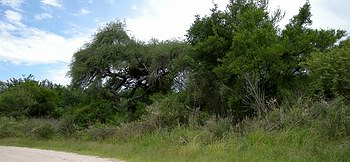

NON PASSERIFORMES
Martin Pescador Mediano - Amazon Kingfisher- Chloroceryle amazona

Carpinterito Común - White-barred Piculet - Picumnus cirratus


PASSERIFORMES
Espienro Grande - Greater Thornbird - Phacellodomus ruber


FORMICARIIDAE
Chororó - Great Antshrike - Taraba major


{kind=link}
Choca Común - Variable Antshrike - Thamnophilus caerulescens


TYRANNIDAE
Mosqueta Ojo Dorado - Pearly-vented Tody-Tyrant- Todirostrum margaritaceiventer


EMBERIZIDAE
Pepitero Gris - Greyish Saltator - Saltator coerulescens

PARULIDAE
Arañero Silbón - White-browed Warbler - Basileuterus leucoblefarus

ICTERIDAE
Boyero Ala Amarilla - Golden-winged Cacique - Cacicus chrysopterus


|
Regreso
a Berduc
El 3 de diciembre pude visitar nuevamente para pasar una mañana en este hermoso sitio. Dediqué tiempo a tratar de fotografiar Chororó y Carpintero del Cardón, que estaba nidificando cerca de la casa del guardaparques. Pude visitar la zona del río, donde vi también Volatineros y Capuchinos, y "casi" obtuve lo que habría sido una foto memorable de 2 Gaviotín Chico, posado en un tronco emergente del río - pero se volaron un instante antes... |
Berduc
Revisited
On December 3rd I was able to return to this place for a morning visit. I spent much time trying to photograph Greater Ant-shrike and White-fronted Woodpecker, nesting in the grounds near the warden's house. I also visited the coastal area where I saw Blue-black Grassquit and a seedeater, and "just" failed to get what would have been a memorable digiscoped photo of a pair of Yellow-billed Terns resting on a log protruding from the river - but they flew too soon... |

Vista
del bosque que bordea el camino a acceso a la reserva
View of the forest that lines the access road
to the reserve
{kind=link}
Crespín -
Striped Cuckoo - Tapera naevia

Carpinerto del Cardón
- White-fronted Woodpecker - Melanerpes cactorum


Chororó
- Greater Ant-shrike - Tarab major


Barullero
- Tawny-crowned Pygmy-Tyrant - Euscarthmus meloryphus


Benteveo
Rayado - Streaked FLycatcher - Myiodynastes macuulatus

Portal del sitio: www.fotosaves.com.ar
Main page of this site: www.fotosaves.com.ar